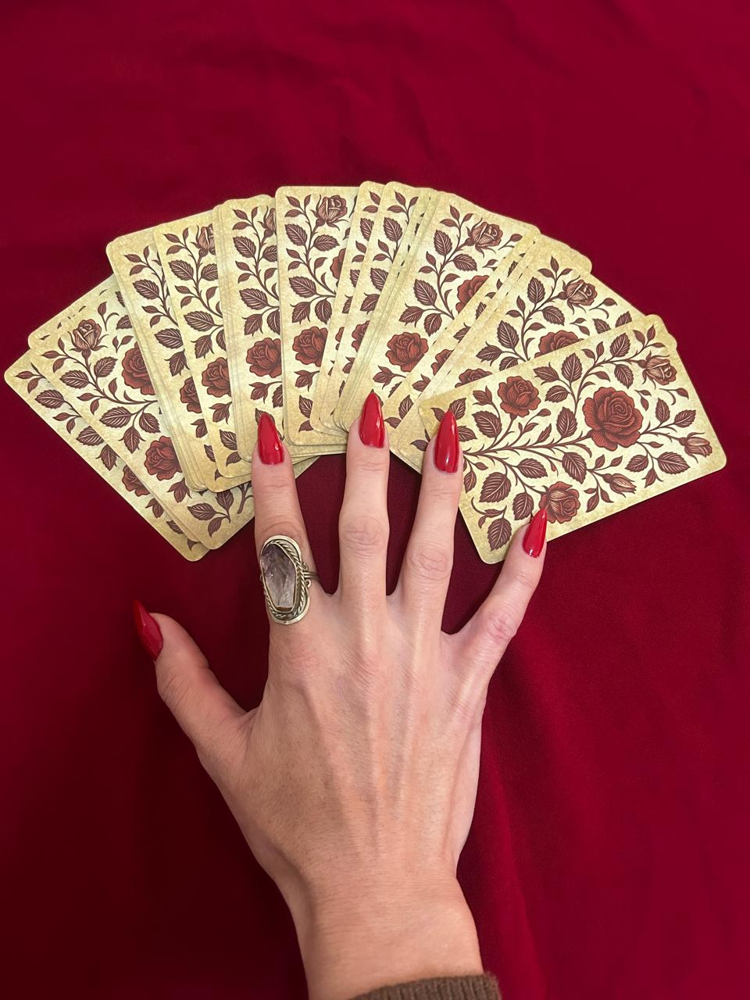

Sibila Oráculo oferece consultas de tarot e leituras espirituais para trazer clareza aos seus caminhos.
Leituras personalizadas para trazer clareza, orientação e respostas para os desafios da sua vida. Atendimento pelo WhatsApp, com consultas feitas para o seu momento.
Atendimento de segunda a sexta, das 10h às 16h
Mande um relato e receba um conselho gratuitamente
Conte o que está acontecendo e qual é a sua dúvida. A taróloga responde pelo WhatsApp, sem custo.
Um espaço seguro para explorar suas dúvidas e descobrir respostas.
As leituras oferecidas pela Sibila Oráculo são personalizadas e focadas em sua jornada de autoconhecimento. Cada consulta é conduzida com atenção, empatia e respeito às suas questões particulares.
Nossos serviços abrangem diferentes áreas da vida: questões de amor e relacionamentos, caminhos profissionais e vocacionais, clareza energética e orientação espiritual. O objetivo é trazer luz e compreensão para os desafios que você enfrenta.
Cada leitura é um espaço seguro para explorar suas dúvidas e descobrir respostas que residem em você. A Sibila Oráculo está aqui para guiá-lo nesse caminho de descoberta.
O contato e o agendamento são feitos diretamente pelo WhatsApp da taróloga — com flexibilidade, comodidade e comunicação direta.

Três oráculos, uma leitura para cada momento
Baralho Cigano
Leituras objetivas para amor, decisões importantes, orientação espiritual e leitura energética.
4 leituras · a partir de R$ 55,00
Ver leiturasBaralho de Maria Padilha
Tiragens místicas para amor, caminhos, decisões, prosperidade, autoconhecimento e análise energética.
10 tiragens · a partir de R$ 20,00
Ver tiragensTarô Egípcio
Leitura da vibração atual, influências energéticas, bloqueios e fortalecimento espiritual.
Leitura Vibracional · R$ 45,00
Ver leituraO que dizem depois da leitura


Pronto para receber orientação do oráculo?
A clareza que você procura está ao seu alcance. Cada consulta é uma oportunidade de conhecimento profundo e transformação pessoal.
Cada mensagem é uma ponte para a clareza e a transformação.